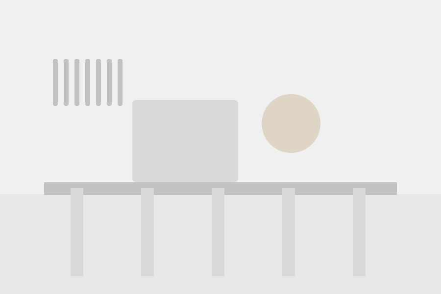

Hey!
I’m Anika.
I’m an industrial and computational designer exploring material, form, and experience. My work moves between physical experiments, visual systems, and digital tools. I use making to understand how objects behave, how processes shape form, and how people encounter the final result.
I’m drawn to projects that bring together research, prototyping, and clear visual communication. This portfolio collects finished work alongside studies that show how an idea changes through testing.



Experience
-
2024
Single Component Deployable Chair — thesis research
Ran a six-month research and development plan, consulted researchers across the UC system, and refined the design through more than twenty rapid low-fidelity prototypes. Presented the work to over a hundred people at the UC Davis undergraduate research conference.
-
2023
G Street Installation — human-centered research
Conducted over thirty interviews with residents to understand the history and the ideal future of the space, tested low-fidelity prototypes in public to shape later iterations, and presented the findings to city council to inform future street renovations.
-
Placeholder row — not real content.
YearRole — Organization
Add the work itself: what you were responsible for, what you decided, and what came of it.
Education
-
Placeholder row — not real content.
YearsDegree — Institution
Add your degree, field, and institution. Left blank rather than guessed at.
Skills
- Product & industrial design Rhino 3D, Fusion 360, 3ds Max, Blender
- Parametric & computational design Grasshopper, Kangaroo, Weaverbird
- Digital fabrication Rhino 3D, Grasshopper, Fusion 360
- Visualization 3ds Max, Corona Renderer, Blender
- AI-assisted design & automation Claude Code, OpenAI Codex, Hermes Agent, DeepSeek, ComfyUI
Interests
- Human-centered product design
- Consumer products & CPG
- Emerging manufacturing technologies
- Sustainable materials & manufacturing
- Mass customization
- Brand strategy & packaging
- Behavioral design
- Translating research into consumer products
Currently learning more about
- Human–robot interaction
- Behavioral science & environmental psychology
- AI-integrated design workflows
- Novel fabrication methods
- Sustainable & bio-based materials
- Human–computer interaction
Recognition
-
Placeholder row — not real content.
YearAward, exhibition or publication
Add anything selected, exhibited, published or awarded. Left blank rather than invented.